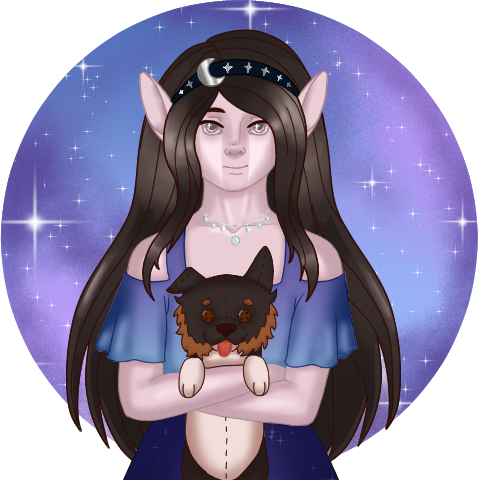

About Me
Thank you so much for visiting my website! I'm BittyBatty, and I always have too many projects to work on!
Right now, I am currently working on book one of what I plan to be a series. These books follow a family of vampire royalty and their friends in a fantasy-esque world. Right now I'm working on the draft one stage, and would love if you checked it out!
Speaking of my book, I draw my characters from it fairly often, but I absolutely love drawing wildlife as well! My pieces are usually finished digitally, but occassionally I do a traditional piece with alcohol markers and colored pencils.
In addition to Writing and drawing, I also dabble in a little bit of coding as yet another hobby of mine. Under the Ukagaka tab to the left, you'll find my three coding projects, all of which are loosely related to my book series. Coding is my newest hobby, and I am still learning a lot about it, but enjoying the community I have found because of it.
If you ever want to chat, have a question about one of my characters, or the world they come from, feel free to talk to me! Or if you simply want to know about my dog (pictured in my avatar on the right), or how I'm procrastinating currently, I'll happily talk about that, too!